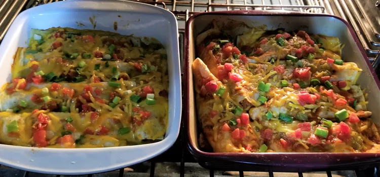

Enchiladas
Home

Description
A hearty breakfast enchilada dish that includes hashbrowns, cheese, ham and diced green chilies rolled into flour tortillas.
A new favorite for your next brunch or office get together that can be made in advance and reheated easily the next day.
Ingredients
- 1 tablespoon vegetable oil
- 1 (16 ounce) package frozen hash brown potatoes
- 1 cup diced cooked ham
- 1 (4.5 ounce) can diced green chile peppers
- 1 ½ cups shredded Cheddar cheese, divided
- 1 (28 ounce) can green chile enchilada sauce
- 8 (10 inch) flour tortillas
Steps
- Preheat the oven to 375 degrees F (190 degrees C).
- Heat oil in a medium skillet over medium-high heat.
Cook and stir potatoes and ham in hot oil until browned.
Stir in chile peppers and 1/2 cup Cheddar cheese.
Cook until cheese is melted.
- Coat the bottom of a 9x13-inch baking dish with a small amount of enchilada sauce;
pour remaining sauce into a shallow bowl.
Dip each tortilla in sauce and fill with potato-ham mixture.
Roll each as tightly as possible and place in the baking dish, seam-side down.
Pour remaining sauce in the bowl over enchiladas and cover the dish with aluminum foil.
- Bake in the preheated oven for about 20 minutes.
Remove the foil and continue baking until lightly browned on top, about 10 minutes more.
Serve hot.